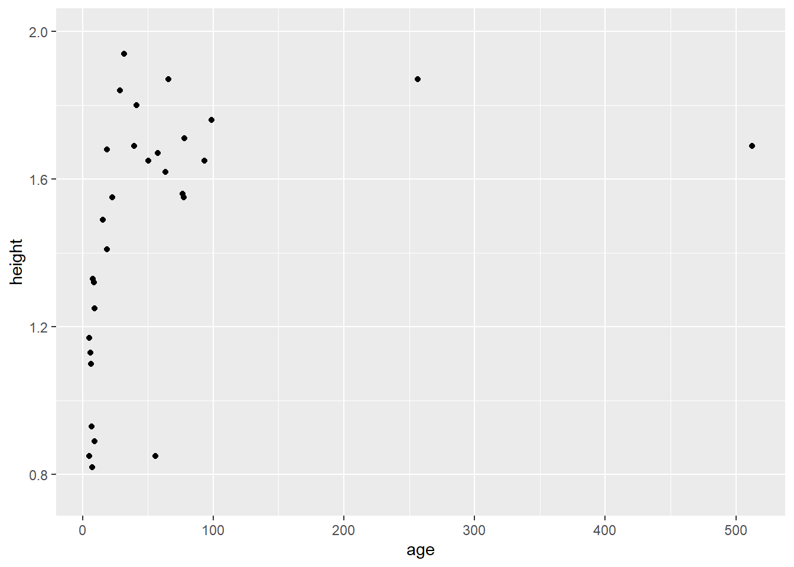
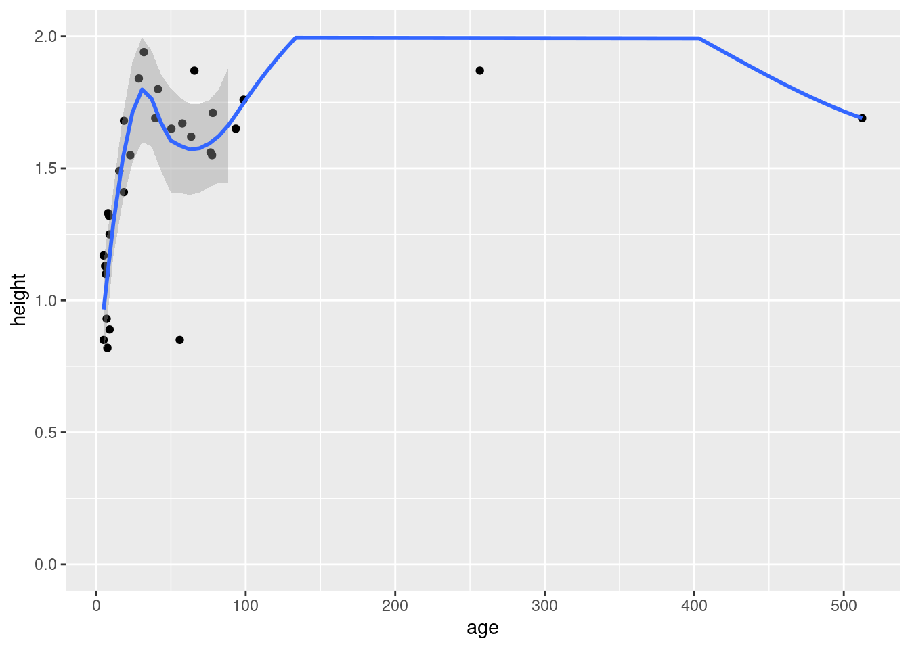
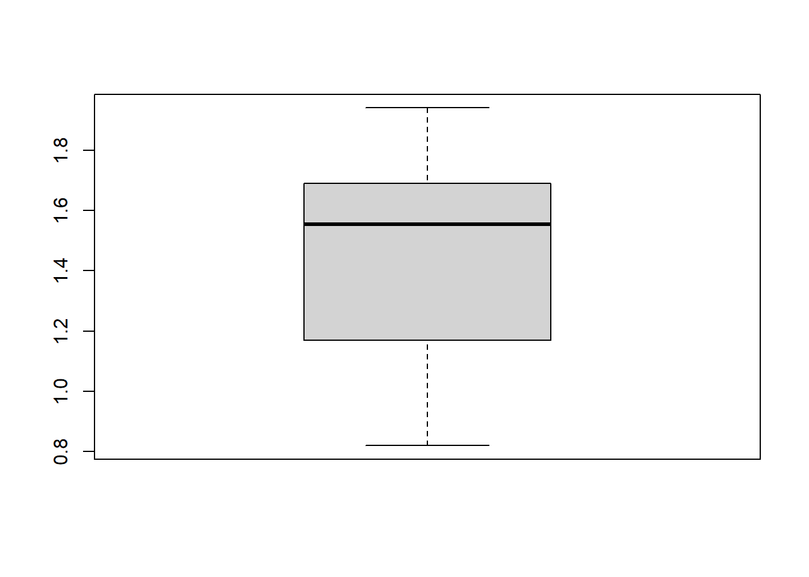
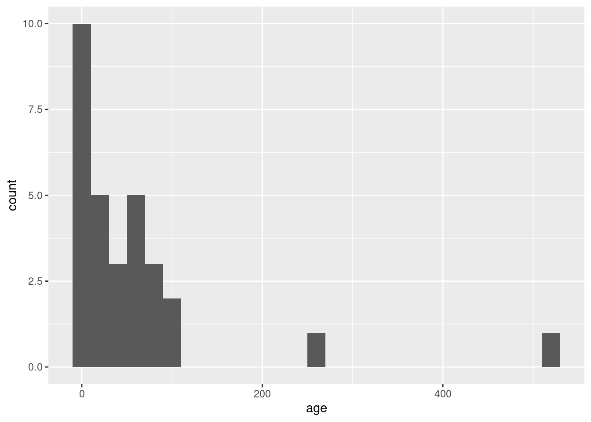
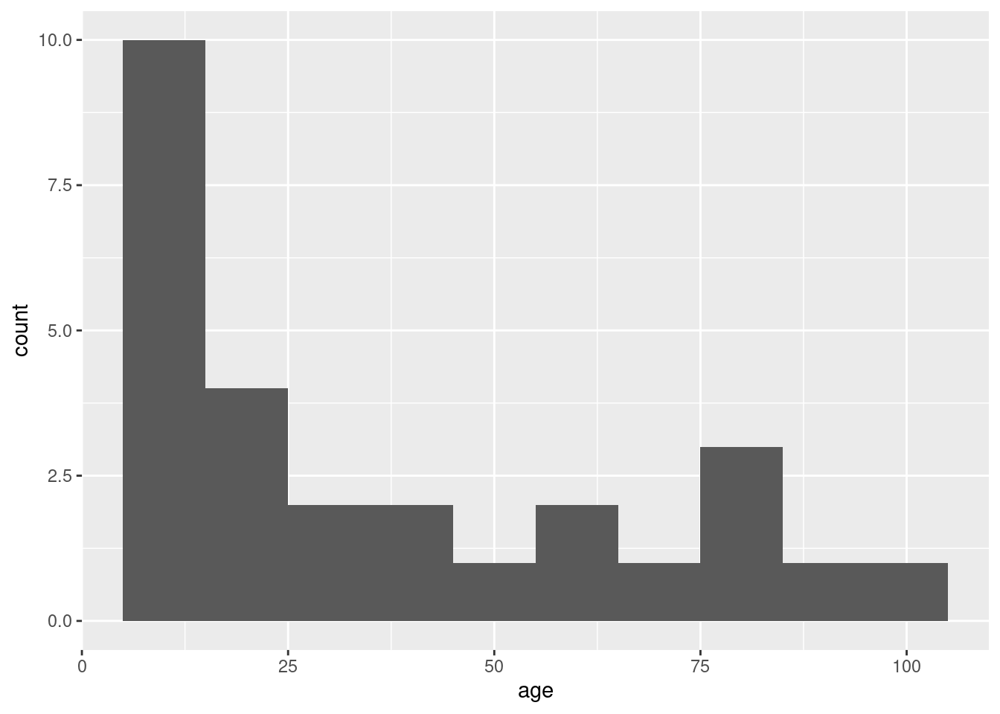
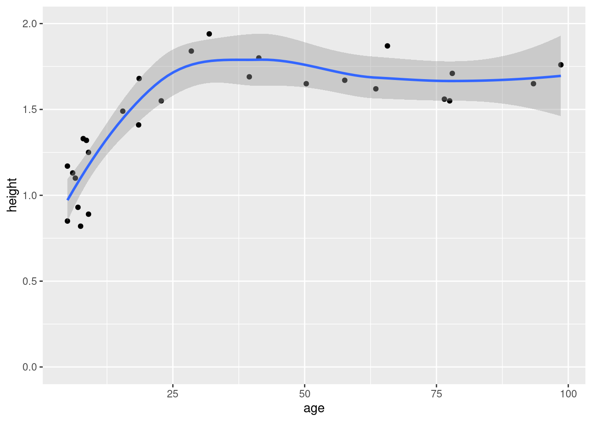
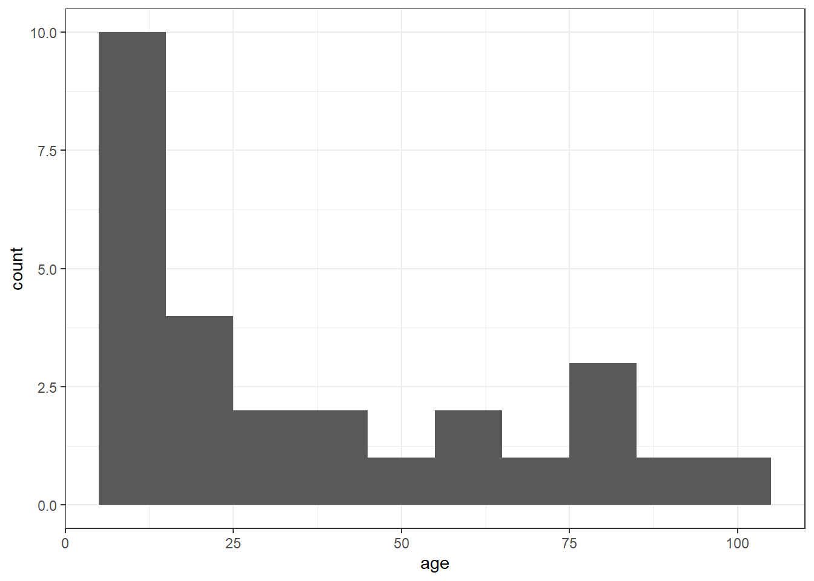
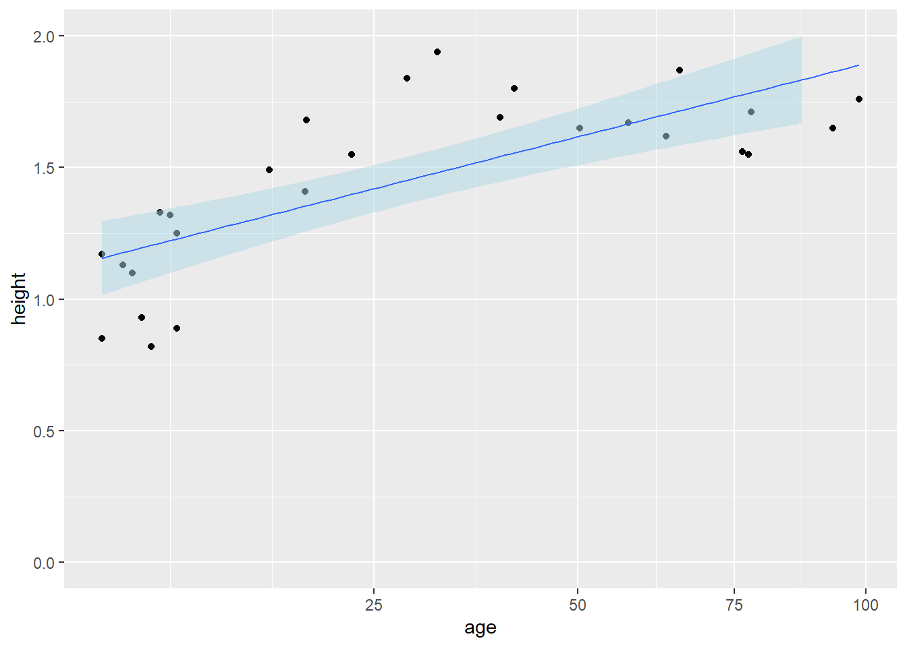
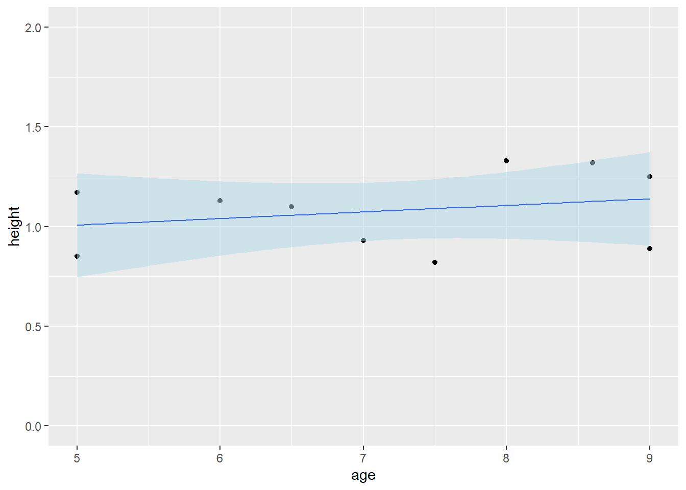
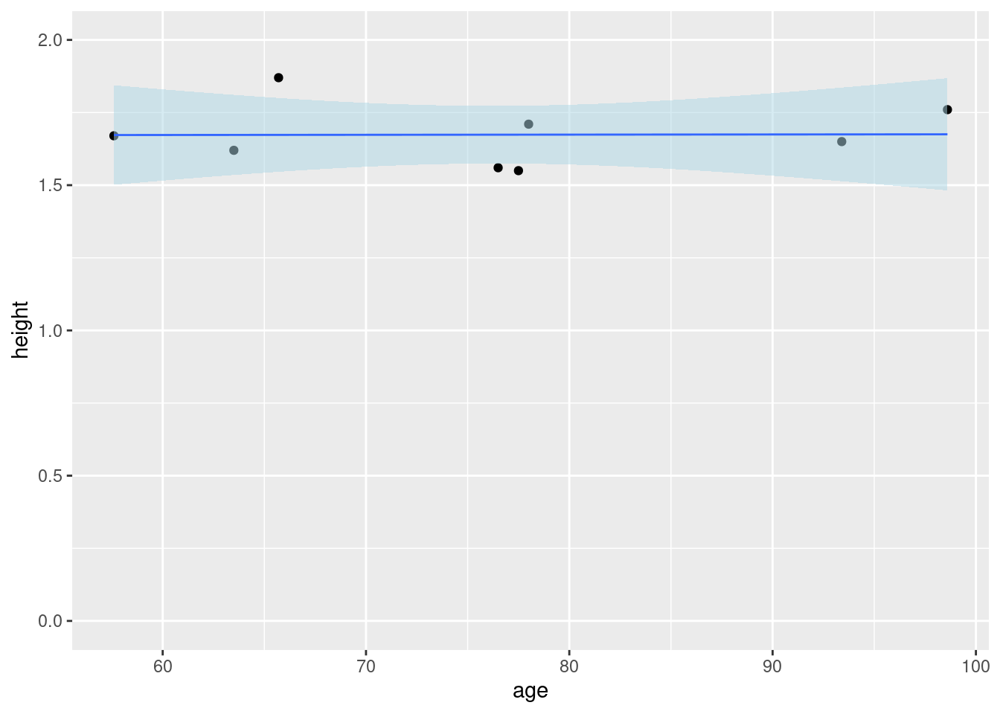

Infovis 1: Demo B
library(ggplot2)
library(dplyr)
library(scales)
# create some data about age and height of people
people <- data.frame(
ID = c(1:30),
age = c(5.0, 7.0, 6.5 ,9.0, 8.0, 5.0, 8.6, 7.5, 9.0, 6.0,
63.5 ,65.7, 57.6, 98.6, 76.5, 78.0, 93.4, 77.5, 256.6, 512.3,
15.5, 18.6, 18.5, 22.8, 28.5, 39.5, 55.9, 50.3, 31.9, 41.3),
height = c(0.85, 0.93, 1.1, 1.25, 1.33, 1.17, 1.32, 0.82, 0.89, 1.13,
1.62, 1.87, 1.67, 1.76, 1.56, 1.71, 1.65, 1.55, 1.87, 1.69,
1.49, 1.68, 1.41, 1.55, 1.84, 1.69, 0.85, 1.65, 1.94, 1.80),
weight = c(45.5, 54.3, 76.5, 60.4, 43.4, 36.4, 50.3, 27.8, 34.7, 47.6,
84.3, 90.4, 76.5, 55.6, 54.3, 83.2, 80.7, 55.6, 87.6, 69.5,
48.0, 55.6, 47.6, 60.5, 54.3, 59.5, 34.5, 55.4, 100.4, 110.3)
)
# build a scatterplot for a first inspection
ggplot(people, aes(x=age, y=height)) +
geom_point() 
ggplot(people, aes(x=age, y=height)) +
geom_point() +
scale_y_continuous(limits = c(0.75, 2))
# Go to help page: http://docs.ggplot2.org/current/ -> Search for icon of fit-line
# http://docs.ggplot2.org/current/geom_smooth.html
# build a scatterplot for a first inspection, with regression line
ggplot(people, aes(x=age, y=height)) +
geom_point() +
scale_y_continuous(limits=c(0, 2.0)) +
geom_smooth()
# stem and leaf plot
stem(people$height)
The decimal point is 1 digit(s) to the left of the |
8 | 25593
10 | 037
12 | 523
14 | 19556
16 | 255789916
18 | 04774stem(people$height, scale=2)
The decimal point is 1 digit(s) to the left of the |
8 | 2559
9 | 3
10 |
11 | 037
12 | 5
13 | 23
14 | 19
15 | 556
16 | 2557899
17 | 16
18 | 0477
19 | 4# explore the two variables with box-whiskerplots
summary(people$age) Min. 1st Qu. Median Mean 3rd Qu. Max.
5.00 8.70 30.20 59.14 65.15 512.30 boxplot(people$age)
summary(people$height) Min. 1st Qu. Median Mean 3rd Qu. Max.
0.820 1.190 1.555 1.455 1.690 1.940 boxplot(people$height)
# explore data with a histgram
ggplot(people, aes(x=age)) +
geom_histogram(binwidth=20) 
density(x = people$height)
Call:
density.default(x = people$height)
Data: people$height (30 obs.); Bandwidth 'bw' = 0.1576
x y
Min. :0.3472 Min. :0.001593
1st Qu.:0.8636 1st Qu.:0.102953
Median :1.3800 Median :0.510601
Mean :1.3800 Mean :0.483553
3rd Qu.:1.8964 3rd Qu.:0.722660
Max. :2.4128 Max. :1.216350 # re-expression: use log or sqrt axes
#
# Find here guideline about scaling axes
# http://www.cookbook-r.com/Graphs/Axes_(ggplot2)/
# http://docs.ggplot2.org/0.9.3.1/scale_continuous.html
# logarithmic axis: respond to skewness in the data, e.g. log10
ggplot(people, aes(x=age, y=height)) +
geom_point() +
scale_y_continuous(limits=c(0, 2.0)) +
geom_smooth() +
scale_x_log10()
# outliers: Remove very small and very old people
peopleClean <- people %>%
filter(ID != 27) %>% # Diese Person war zu klein.
filter(age < 100) # Fehler in der Erhebung des Alters
ggplot(peopleClean, aes(x=age)) +
geom_histogram(binwidth=10)
ggplot(peopleClean, aes(x=age, y=height)) +
geom_point() +
scale_y_continuous(limits=c(0, 2.0)) +
geom_smooth()
# with custom binwidth
ggplot(peopleClean, aes(x=age)) +
geom_histogram(binwidth=10) +
theme_bw() # specifying the theme
# quadratic axis
ggplot(peopleClean, aes(x=age, y=height)) +
geom_point() + scale_y_continuous(limits=c(0, 2.0)) +
geom_smooth(method="lm", fill='lightblue', size=0.5, alpha=0.5) +
scale_x_sqrt()
# filter "teenies": No trend
filter(peopleClean, age < 15) %>%
ggplot(aes(x=age, y=height)) +
geom_point() +
scale_y_continuous(limits=c(0, 2.0)) +
geom_smooth(method="lm", fill='lightblue', size=0.5, alpha=0.5)
# filter "teenies": No trend
peopleClean %>%
filter(age > 55) %>%
ggplot(aes(x=age, y=height)) +
geom_point() +
scale_y_continuous(limits=c(0, 2.0)) +
geom_smooth(method="lm", fill='lightblue', size=0.5, alpha=0.5)
# Onwards towards multidimensional data
# Finally, make a scatterplot matrix
pairs(peopleClean[,2:4], panel=panel.smooth)
pairs(peopleClean[,2:4], panel=panel.smooth)